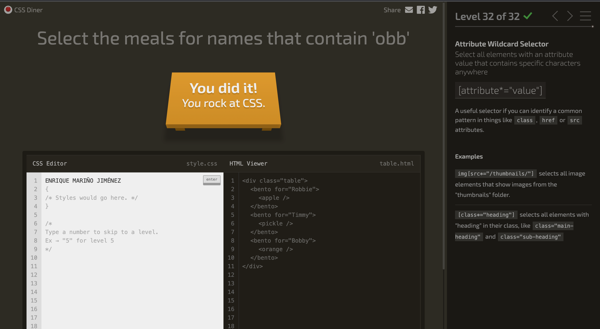

Captura CSS-Diner acabado
Listado de selectores CSS
- Type selector: selecciona elementos por su tipo
- ID Selector: selecciona elementos con un ID
- Descendant Selector: seleciona un elemento dentro de otro elemento
- Class Selector: seleciona elementos por su clase
- Comma Combinator: combina selectores con coma
- Selector Universal: seleccionas todo
- Adjacent Sibling Selector: selecciona un elemento que siga directamente a otro elemento
- General Sibling Selector: selecciona elementos que siguen a otro elemento
- Child Selector: selecciona directamente hijos de un elemento
- First Child Pseudo-selector: selecciona el primer elemento hijo dentro de otro elemento
- Only Child Pseudo-selector: seleciona un elemento que sea el único elemento dentro de otro.
- Last Child Pseudo-selector: seleciona el último elemento dentro de otro elemento
- Nth Child Pseudo-selector: selecciona un elemento por su orden en otro elemento
- Nth Last Child Selector: selecciona un elemento por su orden en otro elemento, contando desde atrás
- First of Type Selector: selecciona el primer elemento de un tipo específico
- Nth of Type Selector: Selecciona un elemento específico según su tipo y orden en otro elemento, o instancias pares o impares de ese elemento.
- Nth-of-type Selector with Formula: :nth-of-type(An+B). Selecciona cada elemento nth y comienza el recuento en una instancia específica de ese elemento
- Only of type Selector: selecciona elementos que sean los únicos de su tipo dentro de su elemento padre
- Last of Type Selector: selecciona el último elemento de un tipo específico
- Empty Selector: selecciona elementos que no tienen hijos
- Negation Pseudo-class: selecciona todos los elementos que no coincidan con el selector de negación
- Attribute Selector: seleciona todos los elementos que tienen atributo específico
- Attribute Value Selector: selecciona todos los elementos que tienen un valor de atributo específico
- Attribure Starts With Selector: selecciona todos los elementos con un valo rde atributo que comience con caracteres específicos
- Attribute Ends With Selector: selecciona todos los elementos con un valor de atributo que termine con caracteres específicos
- Attribute Wildcard Selector: selecciona todos los elementos con un valor de atributo que contenga caracteres específicos en cualquier lugar